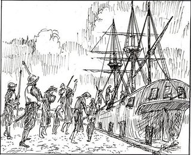
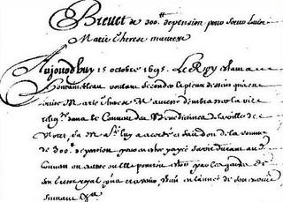

Thu, 15 Nov 2012 01:00:04 PST
Los esclavos olvidados de América, los irlandeses
Los esclavos olvidados de América, los irlandeses
Cuando hablamos de esclavos y de América, la primeras imágenes que nos vienen a la cabeza son las enormes plantaciones de algodón donde los esclavos traídos de África trabajan de sol a sol. Pero hubo otros esclavos, en este caso blancos y casi olvidados por la historia, que sufrieron las mismas penalidades… los irlandeses. En [...]Los esclavos olvidados de América, los irlandeses escrito por Javier Sanz en: Historias de la Historia
También puedes seguirnos en Twitter, Facebook y Google+
Ya a la venta...
Cuando hablamos de esclavos y de América, la primeras imágenes que nos vienen a la cabeza son las enormes plantaciones de algodón donde los esclavos traídos de África trabajan de sol a sol. Pero hubo otros esclavos, en este caso blancos y casi olvidados por la historia, que sufrieron las mismas penalidades… los irlandeses.
En el siglo XVI, los españoles fueron los primeros europeos en utilizar esclavos africanos en el Nuevo Mundo (islas de Cuba y La Española). Más tarde, portugueses, holandeses, franceses y británicos hicieron lo propio en sus respectivas colonias (Brasil, Antillas, Norteamérica…). Las colonias británicas en Norteamérica también fueron utilizadas para el destierro penal de criminales convictos desde principios del siglo XVII hasta la independencia, y posteriormente a Australia entre 1788 y 1868. Además de estos criminales, los ingleses enviaron a sus colonias norteamericanas a los irlandeses, sobre todo católicos, que se rebelaron contra la opresión inglesa… vendidos a los colonos como mano de obra.

Mujeres y niños esclavos
El comercio humano comenzó cuando James II, rey de Inglaterra, vendió 30.000 prisioneros políticos irlandeses como esclavos al Nuevo Mundo. A mediados del siglo XVII, los irlandeses se convirtieron en la principal fuente de ganado humano para los comerciantes ingleses… el 70% de la población total de las islas Antigua y Montserrat eran esclavos irlandeses. En la década de 1650 más de 100.000 niños irlandeses, entre 10 y 14 años, fueron separados de sus padres y vendidos como esclavos en las Indias Occidentales, Virginia y Nueva Inglaterra; 52.000 más, en su mayoría mujeres y niños, fueron vendidos a Barbados y Virginia; 2.000 niños se vendieron a Jamaica… Ni eran criminales ni tampoco, como se ha tratado de vender, tenían contratos de servidumbre.
Además, eran más baratos que los africanos (en el XVII, un esclavo africano costaba unas 50 libras esterlinas y un irlandés no más de 5) y los hijos nacidos de esclavos blancos seguían siendo esclavos incluso en el caso de que su madre obtuviese la libertad, así que las madres permanecían con ellos. Los colonos, para maximizar sus recursos, decidieron utilizar a las mujeres/niñas irlandesas – además de para su beneficio propio – para cruzarlas con africanos y criar mulatos. Estos nuevos esclavos rompieron el mercado… se podían vender por un precio superior a los irlandeses y salían más baratos que los africanos. Esta práctica de mestizaje esclavo se extendió hasta que en 1681, por las presiones de la Royal African Company a la que la Corona británica había concedido el monopolio sobre las rutas del comercio de esclavos africanos, se aprobó la ley “Forbidding the practice of mating Irish slave women to African slave men for the purpose of producing slaves for sale” (Prohibida la práctica de acoplamiento de esclavas irlandesas y esclavos africanos con el fin de producir esclavos para la venta).
En 1807 el Parlamento Británico aprobó la Ley para la Abolición del Comercio de Esclavos, bajo la cual los capitanes de buques de esclavos podían ser severamente penados por cada esclavo transportado. Esta fue superada por la Ley Abolicionista de 1833, que liberó todos los esclavos del Imperio Británico.
Fuentes: The forgotten white slaves, The Irish slave Trade, Irish BlogArtículos relacionados:
- Brookes, de barco de esclavos a icono abolicionista
- Una colonia británica fundada por morosos
- El día que los escoceses intentaron colonizar Panamá
- Cuando los espaldas mojadas eran los que ahora persiguen inmigrantes
- Y Colón llegó a las Indias…
Los esclavos olvidados de América, los irlandeses escrito por Javier Sanz en: Historias de la Historia
También puedes seguirnos en Twitter, Facebook y Google+
Ya a la venta...
Sun, 11 Nov 2012 03:00:47 PST
Cartas de amor escritas en los campos nazis que llegaron a su destino 70 años después
Cartas de amor escritas en los campos nazis que llegaron a su destino 70 años después
Le service du travail obligatoire (Servicio de Trabajo Obligatorio) fue el reclutamiento forzoso y la deportación de trabajadores franceses – entre 600.000 y 650.000 entre junio 1942 y julio 1944 – a la Alemania nazi con el fin de trabajar como mano de obra forzada durante la Segunda Guerra Mundial. Alemania obligó a la Francia [...]Cartas de amor escritas en los campos nazis que llegaron a su destino 70 años después escrito por Javier Sanz en: Historias de la Historia
También puedes seguirnos en Twitter, Facebook y Google+
Ya a la venta...
Le service du travail obligatoire (Servicio de Trabajo Obligatorio) fue el reclutamiento forzoso y la deportación de trabajadores franceses – entre 600.000 y 650.000 entre junio 1942 y julio 1944 – a la Alemania nazi con el fin de trabajar como mano de obra forzada durante la Segunda Guerra Mundial. Alemania obligó a la Francia de Vichy a crear este servicio para compensar la pérdida de mano de obra en sus fábricas debido al masivo reclutamiento de soldados alemanes. Además, por cada tres trabajadores franceses enviados, se devolvía a Francia un prisionero de guerra.

Marcel y su esposa René
Uno de estos trabajadores fue el tornero Marcel Heuzé. Entre 1942 y 1944, Marcel estuvo trabajando en la fábrica de Daimler-Benz donde se producían tanques, motores aeronáuticos y vehículos blindados. Durante todo este tiempo, envió decenas de cartas a su esposa René y sus tres hijas desde el campo de trabajo de Marienfelde, al suroeste de Berlín. Lamentablemente, sólo unas pocas llegaron a su destino, del resto se ocupó la censura alemana… pero no fueron destruidas.
Carolyn Porter, una diseñadora gráfica, descubrió por casualidad un lote de viejas cartas en francés en una tienda de antigüedades de Stillwater (Minnesota). Aunque apenas sabía francés, aquellas cartas le intrigaron y decidió comprarlas. Buscó alguien que le ayudase a traducirlas y descubrió el día a día de Marcel, el amor por su esposa y sus hijas, su miedo de no volver a verlas, su frustración al darse cuenta de que las cartas no llegarían… En palabras de Carolyn “Era hermoso y desgarrador. Cuando terminé, sólo quería saber si había vivido, si este hombre había regresado a casa con su esposa y sus hijas”.
Después de un año de labor detectivesca, y ayudada por un genealogista, descubrió que Marcel había logrado sobrevivir y regresar a casa con su familia. Aunque Marcel había fallecido en 1992 y René en 2005, consiguió contactar con su descendientes (hijos, nietos y biznietos) y hacerles llegar las cartas… 70 años después llegaron a su destino. A finales del mes pasado, Carolyn y la familia de Marcel se reunieron en París.

Marcel Heuzé, hijo, nacido después de la guerra
Fuentes: Daily Mail, The TelegraphArtículos relacionados:
- La planificación familiar de los nazis
- ¿Cómo consiguieron evitar las deportaciones nazis dos pequeños pueblos de Polonia?
- Las medallas de los premios Nobel que no pudieron encontrar los nazis
- El mártir de Auschwitz
- Aliados y alemanes se pegaban por las “piedras gallegas”
Cartas de amor escritas en los campos nazis que llegaron a su destino 70 años después escrito por Javier Sanz en: Historias de la Historia
También puedes seguirnos en Twitter, Facebook y Google+
Ya a la venta...
Sun, 04 Nov 2012 03:00:06 PST
El mejor libro de medicina de la historia
El mejor libro de medicina de la historia
Herman Boerhaave (1668 – 1738) médico, botánico y humanista holandés fue considerado como una de las figuras más notables de la medicina europea que llegó a ocupar diversas cátedras en la Universidad de Leiden. Su doctrina intentaba combinar las concepciones clásicas con las teorías patológicas aparecidas en el siglo XVII. Sus aportaciones se recogen en [...]El mejor libro de medicina de la historia escrito por Javier Sanz en: Historias de la Historia
También puedes seguirnos en Twitter, Facebook y Google+
Ya a la venta...
Herman Boerhaave (1668 – 1738) médico, botánico y humanista holandés fue considerado como una de las figuras más notables de la medicina europea que llegó a ocupar diversas cátedras en la Universidad de Leiden. Su doctrina intentaba combinar las concepciones clásicas con las teorías patológicas aparecidas en el siglo XVII. Sus aportaciones se recogen en dos textos no demasiado extensos: las Institutiones medicae y los Aphorismi.
Pero lo que se desconocía era su sentido del humor, sobre todo,
mortis causa. Tras su fallecimiento legó un libro sellado titulado “
Los secretos más exclusivos y más profundos del arte médico“. Este libro, todavía sellado, se vendió en pública subasta y fue adquirido por
20.000 dólares en oro. El autor de la obra y su imponente título merecían la pena.
Cuando el anónimo propietario rompió el sello se encontró con un libro completamente en blanco, salvo la primera página en la que se podía leer una nota:
Conserve la cabeza fresca, los pies calientes y hará empobrecer al mejor médico del mundo.
Esto ya me lo decía mi abuela
Artículos relacionados:
- Cuando el tabaco no mataba sino que salvaba vidas… o eso creían
- La virgen que dio a luz a su gemela
- La cara amable de la Física
- ¿Cómo se transportaban las vacunas hace dos siglos?
- Convertir el trigo en oro, patente número 14.204
El mejor libro de medicina de la historia escrito por Javier Sanz en: Historias de la Historia
También puedes seguirnos en Twitter, Facebook y Google+
Ya a la venta...
Tue, 30 Oct 2012 01:00:38 PDT
Nabo, el esclavo pigmeo que puso los cuernos al rey Sol
Nabo, el esclavo pigmeo que puso los cuernos al rey Sol
Durante el reinado de Luis XIV, el rey Sol, Francia incrementó su poder y su influencia por toda Europa llevando a Francia a una de sus épocas más gloriosas. En su palacio de Versalles se recibían embajadas de lugares tan remotos como Siam, Persia… o Issiny (reino situado entre las actuales Ghana y Costa de [...]Nabo, el esclavo pigmeo que puso los cuernos al rey Sol escrito por Javier Sanz en: Historias de la Historia
También puedes seguirnos en Twitter, Facebook y Google+
Ya a la venta...
Durante el reinado de Luis XIV, el rey Sol, Francia incrementó su poder y su influencia por toda Europa llevando a Francia a una de sus épocas más gloriosas. En su palacio de Versalles se recibían embajadas de lugares tan remotos como Siam, Persia… o Issiny (reino situado entre las actuales Ghana y Costa de Marfil). En una recepción con los embajadores del rey Arda de Issiny, le ofrecieron al rey Sol, entre otros muchos presentes, un esclavo pigmeo – otra versión atribuye la llegada del africano a Versalles como un regalo del duque Beaufort al monarca tras uno de sus viajes -
El rey no sabía qué hacer con él, así que decidió regalárselo a su esposa María Teresa de Austria y Borbón, hija de Felipe IV de España, para que le hiciese compañía y amenizase en tantas y tantas veladas en las que el rey estaba ocupado en cuestiones de Estado y en otros menesteres más mundanos (Luis XIV era de los que perseguía una fregona con faldas). La reina y Nabo, que así decidió María Teresa llamar al esclavo, eran forasteros en tierra extraña y pronto se convirtieron en inseparables y confidentes. El hecho de tener un esclavo negro llegó a convertirse en una moda entre los damas de la corte de Versalles.
El 16 de noviembre de 1664, tras un complicado parto y un mes antes de lo previsto, la reina daba a luz a su tercer hijo, en este caso una hermosa niña… negra. Supongo que ante tamaña sorpresa seguro que se oirían explicaciones del tipo – y esta es cierta – “es que durante el embarazo comió muchas aceitunas negras“. Ante aquella sorpresa, se reunen el rey, los médicos y el clero para ver qué hacer… el pobre Nabo desaparece misteriosamente (incluso se ha llegado a pensar que Nabo fuese el misterioso hombre de la máscara de hierro encarcelado en la prisión de la Bastilla) y a la reina le dicen que la niña está muy débil. A los 48 días se anuncia que la pequeña infanta había fallecido.

Louise Marie Therese
Este cuadro, fechado en 1695 y que actualmente se puede ver en la Biblioteca de Santa Genoveva en el barrio Latino de París, levantó las sospechas… es Louise Marie-Therese (1664-1732), una monja del convento de benedictinas de Moret del que nunca salió y que podría ser la hija de la reina y de Nabo. Las múltiples visitas al convento de miembros de la nobleza – incluso se dice que de su hermanastro Luis, el heredero de la corona – y dos cartas, fechadas el 13 de junio de 1685 y el 15 de octubre de 1695, en las que se conceden pensiones al convento y a la propia monja de 250 y 300 libras respectivamente podrían confirmar las sospechas.

Fuentes: The Queen’s mystery daughter, Una monja negra en la Corte del rey Sol, La monja negra de Moret
Artículos relacionados:
- ¿Por qué los musulmanes pueden tener varias esposas?
- ¿Sabrán los ingleses que el origen de su himno es una fístula anal?
- Soleil Royal, el barco del Rey Sol
Nabo, el esclavo pigmeo que puso los cuernos al rey Sol escrito por Javier Sanz en: Historias de la Historia
También puedes seguirnos en Twitter, Facebook y Google+
Ya a la venta...